OIL COOLER > REMOVAL |
| 1. REMOVE FRONT FENDER SPLASH SHIELD SUB-ASSEMBLY LH |
 |
Remove the 3 bolts and screw.
Turn the clip indicated by the arrow in the illustration to remove the fender splash shield.
| 2. REMOVE FRONT FENDER SPLASH SHIELD SUB-ASSEMBLY RH |
| 3. REMOVE NO. 2 ENGINE UNDER COVER |
 |
Remove the 6 bolts and under cover.
| 4. REMOVE NO. 1 ENGINE UNDER COVER |
 |
Remove the 6 bolts and under cover.
| 5. REMOVE FRONT BUMPER ASSEMBLY (w/ Air Cooled Transmission Oil Cooler) |
for Standard:
Remove the front bumper (Click here).
w/ Winch:
Remove the front bumper (Click here).
| 6. REMOVE HEADLIGHT ASSEMBLY RH (w/ Air Cooled Transmission Oil Cooler) |
Remove the headlight RH (Click here).
| 7. REMOVE FRONT FENDER APRON SEAL FRONT RH |
 |
Using a clip remover, remove the 3 clips and fender apron seal.
| 8. REMOVE FRONT FENDER APRON SEAL REAR RH |
 |
Using a clip remover, remove the 4 clips and fender apron seal.
| 9. DISCONNECT TRANSMISSION OIL COOLER HOSE (for 1GR-FE) |
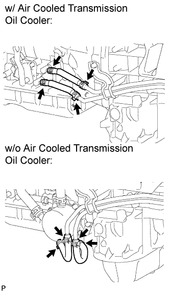 |
Disconnect the 2 transmission oil cooler hoses.
| 10. DISCONNECT TRANSMISSION OIL COOLER HOSE (for 2UZ-FE) |
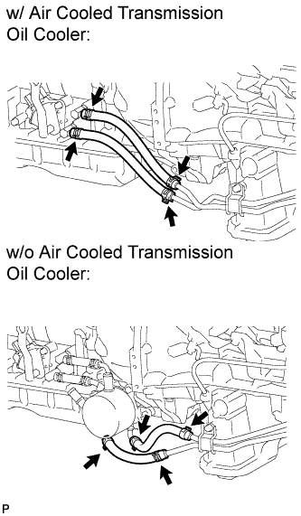 |
Disconnect the 2 transmission oil cooler hoses.
| 11. DISCONNECT INLET NO. 1 OIL COOLER HOSE AND OUTLET NO. 1 OIL COOLER HOSE (for 1GR-FE) |
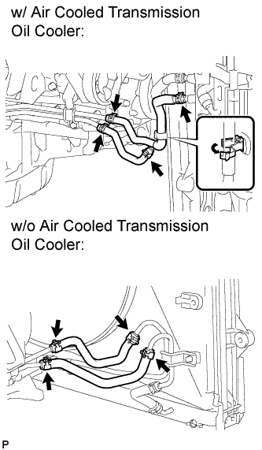 |
w/ Air Cooled Transmission Oil Cooler:
Detach the claw to open the flexible hose clamp.
Disconnect the inlet and outlet oil cooler hoses.
w/o Air Cooled Transmission Oil Cooler:
Disconnect the inlet and outlet oil cooler hoses.
| 12. DISCONNECT INLET NO. 1 OIL COOLER HOSE AND OUTLET NO. 1 OIL COOLER HOSE (for 2UZ-FE) |
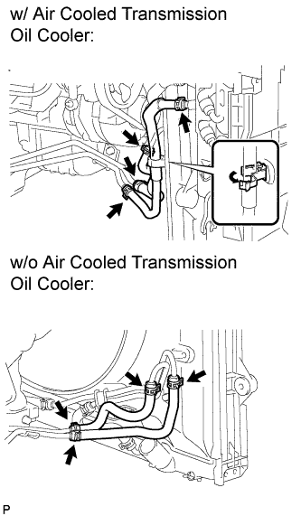 |
w/ Air Cooled Transmission Oil Cooler:
Detach the claw to open the flexible hose clamp.
Disconnect the inlet and outlet oil cooler hoses.
w/o Air Cooled Transmission Oil Cooler:
Disconnect the inlet and outlet oil cooler hoses.
| 13. DISCONNECT INLET NO. 2 OIL COOLER HOSE AND INLET NO. 3 OIL COOLER HOSE (for 1GR-FE) |
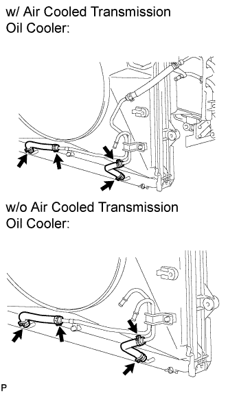 |
Disconnect the 2 inlet oil cooler hoses.
| 14. DISCONNECT INLET NO. 2 OIL COOLER HOSE AND INLET NO. 3 OIL COOLER HOSE (for 2UZ-FE) |
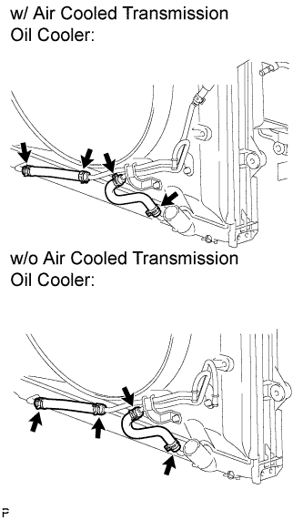 |
Disconnect the 2 inlet oil cooler hoses.
| 15. DISCONNECT INLET NO. 4 OIL COOLER HOSE (for 1GR-FE) |
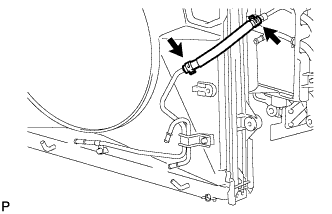 |
| 16. DISCONNECT INLET NO. 4 OIL COOLER HOSE (for 2UZ-FE) |
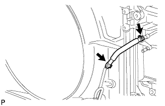 |
| 17. REMOVE OIL COOLER TUBE (for 1GR-FE) |
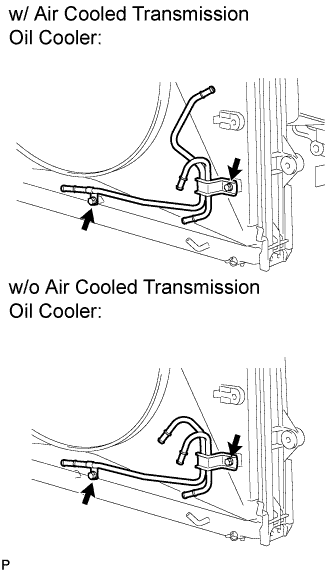 |
Remove the 2 bolts and oil cooler tube.
| 18. REMOVE OIL COOLER TUBE (for 2UZ-FE) |
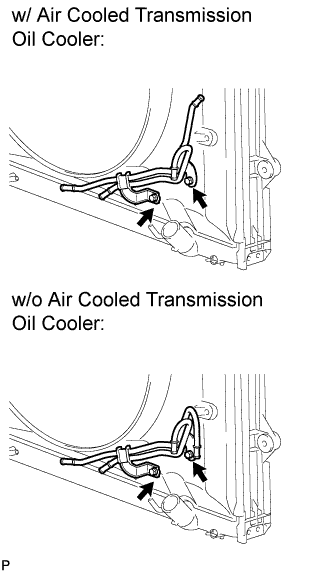 |
Remove the 2 bolts and oil cooler tube.
| 19. REMOVE TRANSMISSION OIL COOLER AIR DUCT |
 |
Remove the 4 bolts and transmission oil cooler air duct.
| 20. REMOVE OIL COOLER ASSEMBLY |
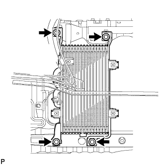 |
Remove the 4 bolts and oil cooler.
 |
Remove the 5 bolts and transmission oil cooler air duct.
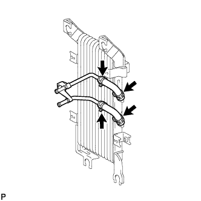 |
Disconnect the oil cooler inlet hose and outlet hose and remove the tube.